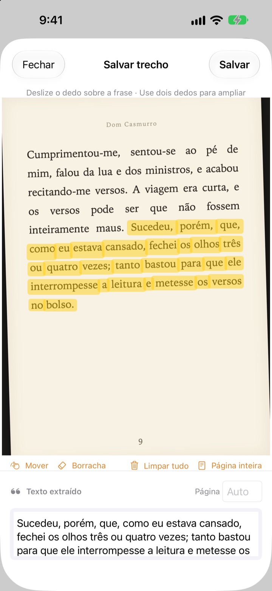
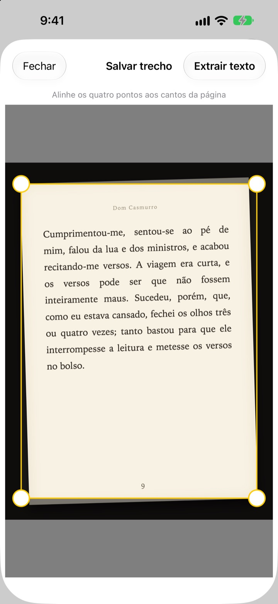
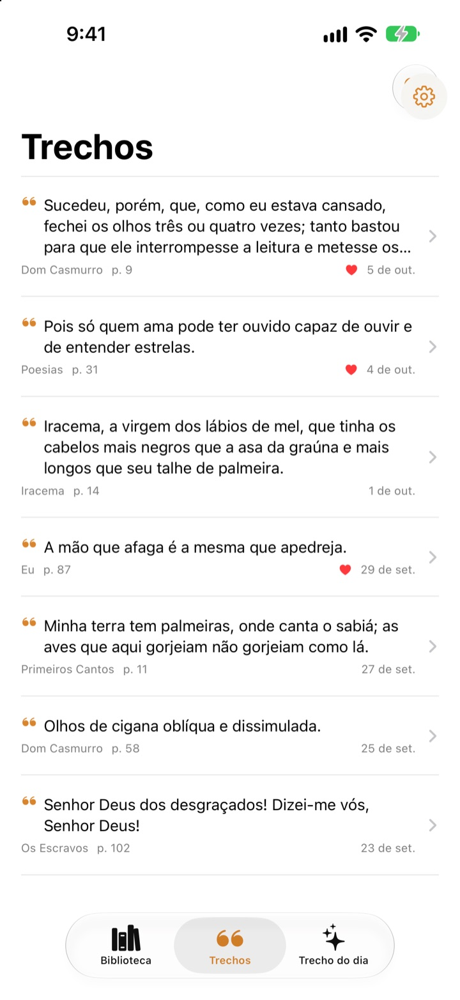
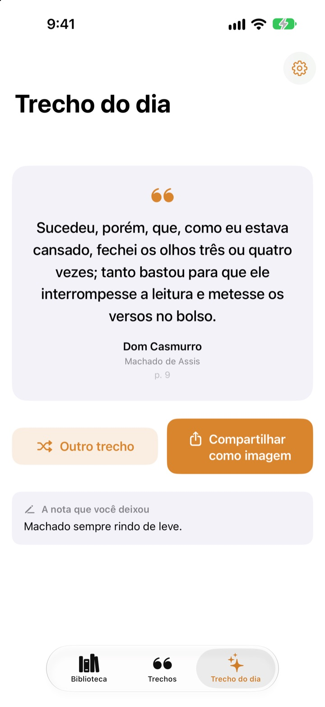

Grife o livro
sem caneta
Fotografe a página, passe o dedo sobre a frase de que gosta e só ela é salva como texto. O livro e o número da página vão junto.
Todos os recursos são gratuitos e sem anúncios.

Experimente
Passe o dedo ou o mouse sobre qualquer frase da página abaixo. Só as palavras por onde você passar vão para o cartão.
Onde vão parar as frases boas?
O livro é da biblioteca, então não dá para grifar. A foto da página some no meio de milhares de outras na galeria. Digitada num app de notas, a frase quase nunca leva junto o título e a página. O Bookmark Shot guarda a frase, o livro e a página com dois gestos: fotografar e deslizar o dedo.
Foto torta, página reta
Depois de fotografar, ajuste os quatro cantos e até uma página tirada de lado fica plana como uma folha. Letras mais nítidas, reconhecimento melhor.
As fotos que já estão na sua fototeca também servem.

Todos os trechos num só lugar
Seus livros ficam numa biblioteca de capas e seus trechos, reunidos numa só lista. Busque por frase, nota ou título do livro e marque com um coração os que quiser reler.
Adicione um livro com uma só foto da capa. O título e o autor são lidos para você, e o ISBN também, se o código de barras da quarta capa aparecer.

Reencontre as frases esquecidas
O Trecho do dia traz de volta, todo dia, um dos seus trechos salvos, junto com a nota que você deixou. Deixe-o na Tela de Início ou na Tela Bloqueada com um widget.
Amou? Transforme-o num cartão com cara de papel e compartilhe.

Comece em três passos
- 1
Fotografe a capa
O título e o autor são preenchidos. Edite antes de salvar, se precisar.
- 2
Fotografe a página
Ajuste os quatro cantos e ela fica reta.
- 3
Grife a frase
O número da página é encontrado e salvo junto.
Ferramentas da tela de grifar
- Deslizar o dedo
- seleciona só as palavras por onde você passa
- Pinçar
- amplia para grifar com mais precisão
- Mover
- arrasta a página ampliada
- Borracha
- tira as palavras grifadas
- Limpar tudo
- remove todas as palavras selecionadas
- Página inteira
- fica com todo o texto da página
- Campo da página
- o número da página encontrado, editável
Com o VoiceOver, toque duas vezes numa linha para incluí-la ou tirá-la.
Todos os recursos são gratuitos
Grátis
- Livros adicionados pela capa, ISBN pelo código de barras
- Página endireitada e grifo com o dedo
- Número da página automático
- Biblioteca, busca de trechos e favoritos
- Trecho do dia com widgets para a Tela de Início e a Tela Bloqueada
- Compartilhamento como cartão
- Sincronização com o iCloud
Apoie o desenvolvedor
- Se quiser, mande uma gorjetinha pelos Ajustes
- Gorjetas não desbloqueiam nada. O app é o mesmo
Sem anúncios, sem assinatura.
Perguntas
Minhas fotos ou trechos são enviados para algum lugar?
Não. O reconhecimento de texto é feito inteiramente no seu aparelho com o Apple Vision, e suas fotos e trechos nunca vão para um servidor. Também funciona sem internet. Veja os detalhes na Política de Privacidade abaixo.
Quais idiomas ele consegue ler?
O reconhecimento de texto é feito pelo iOS no seu aparelho. Ele lê livros em coreano, inglês, japonês, chinês, russo e na maioria dos idiomas da Europa Ocidental, e nas versões recentes do iOS também tailandês, vietnamita, turco, indonésio, polonês, tcheco, holandês e os idiomas nórdicos. O grego ainda não é reconhecido.
Como escolho só a frase que eu quero?
Depois de fotografar a página, passe o dedo sobre a frase como se usasse um marca-texto, e só essas palavras são selecionadas. Faça o gesto de pinça para ampliar e ganhar precisão. Também há a borracha, Limpar tudo e Página inteira.
O título ou o autor saiu errado.
O reconhecimento da capa adivinha pelo tamanho das letras, então pode errar em capas muito decoradas. Você pode corrigir o título e o autor antes de salvar o livro.
O número da página está errado.
Ele é lido dos números na borda da foto. É só corrigir no campo da página antes de salvar.
Posso ver meus trechos em mais de um aparelho?
Sim. Se você estiver conectado ao iCloud com a mesma Conta Apple e o iCloud Drive estiver ativado, seus livros e trechos são sincronizados automaticamente.
Como adiciono o widget?
Toque e mantenha pressionada a Tela de Início, toque em Editar > Adicionar Widget e escolha Bookmark Shot. Na Tela Bloqueada, toque e mantenha pressionado e depois toque em Personalizar. O Trecho do dia aparece ali.
A câmera não funciona.
Confira em Ajustes > Bookmark Shot se o acesso à câmera e às fotos está permitido. Para tirar fotos, é preciso um iPhone de verdade.
Do que eu preciso?
Um iPhone com iOS 17.0 ou posterior.
Como entro em contato?
Envie um feedback pela tela de Ajustes (engrenagem) do app ou mande um e-mail para o endereço abaixo. Costumamos responder em dois ou três dias.
Dúvidas ou sugestões? Escreva para leeo@kakao.com.